| 1 | Pengenalan Aplikasi |
| 2 | Memulai: Instalasi & Pemilihan Perangkat |
| 3 | Layar Utama (Scan) |
| 4 | Kualitas Sinyal (Quality) |
| 5 | Mode Barcode |
| 6 | Mode Pengiriman: WO vs Register |
| 7 | Scan Latar Belakang & Bulatan Mengambang |
| 8 | Backup CSV Lokal |
| 9 | Update Aplikasi Otomatis |
| 10 | Panduan Lengkap Pengaturan |
| 11 | Bahasa Aplikasi |
| 12 | Pemecahan Masalah (Troubleshooting) |
Stechoq RFID Suite adalah aplikasi Android untuk membaca tag RFID UHF dan barcode menggunakan handheld gudang, lalu mengirim hasilnya secara otomatis ke sistem Warehouse Management (WMS). Satu aplikasi yang sama dapat dipasang di dua merek perangkat berbeda:
Fitur utama yang tersedia:
Aplikasi dipasang sekali oleh admin/IT (lewat file APK atau update otomatis). Setelah dipasang dan dibuka untuk pertama kali, aplikasi akan menanyakan jenis perangkat yang digunakan:
Setelah jenis perangkat dipilih, aplikasi langsung masuk ke Layar Utama (Scan) dan siap digunakan. Semua pengaturan lain (URL server, mode WO/Register, dsb.) diisi lewat menu Pengaturan — lihat Bab 10.
Ini adalah layar yang paling sering dipakai operator sehari-hari.
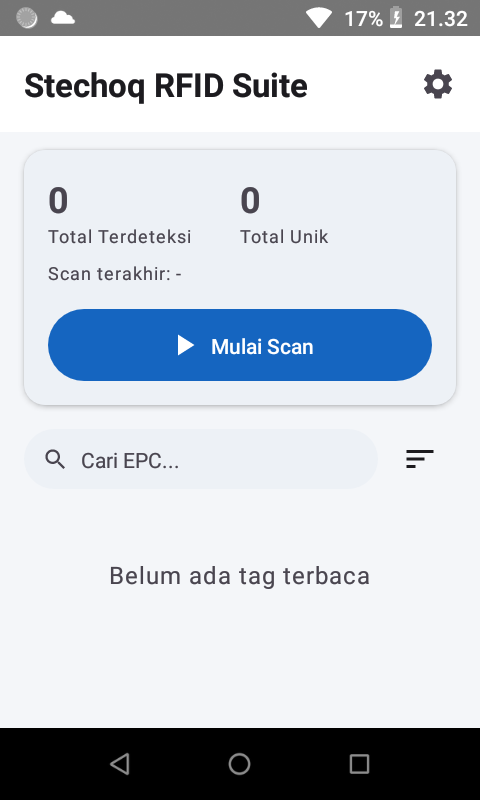
Setiap baris pada daftar tag menampilkan:
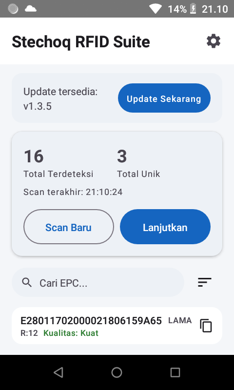
Di atas daftar tag terdapat kotak Cari EPC untuk menyaring tag berdasarkan sebagian kode EPC, dan ikon urutkan (≡) untuk mengubah urutan: terbaru, EPC (A–Z), jumlah baca terbanyak, atau Kualitas terbaik.
Sebelumnya, setiap baris tag menampilkan angka RSSI mentah (misalnya "-58 dBm"), nomor antena, dan waktu terakhir terbaca. Operator di lapangan sulit memaknai angka-angka ini, sehingga sekarang digantikan dengan satu label sederhana: Kualitas.
Kuat (hijau) |
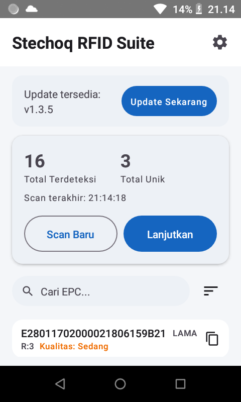 Sedang (kuning/oranye) |
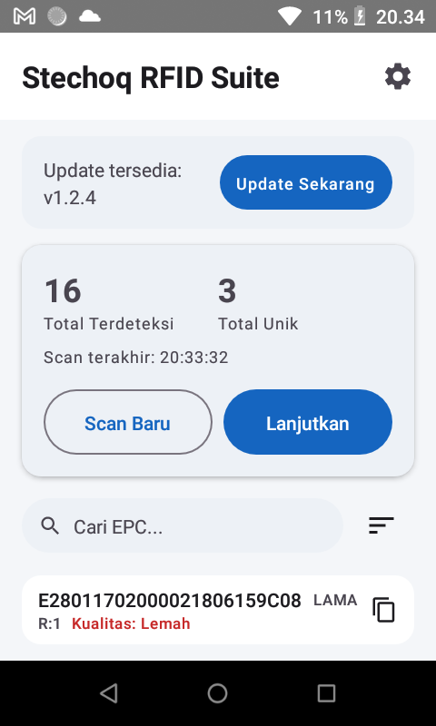 Lemah (merah) |
| Label | Warna | Artinya bagi operator |
|---|---|---|
| Kuat | Hijau | Sinyal tag sangat baik dan sudah terbaca berkali-kali — posisi tag ideal, hasil paling dapat diandalkan |
| Sedang | Kuning/oranye | Sinyal cukup, tapi mungkin perlu didekatkan lagi ke reader untuk hasil lebih meyakinkan |
| Lemah | Merah | Sinyal lemah dan/atau baru terbaca sekali — sebaiknya dekatkan tag ke handheld dan scan ulang |
Selain RFID, aplikasi ini juga bisa dipakai untuk memindai barcode 1D/2D menggunakan pemindai bawaan handheld. Mode ini diaktifkan dari menu Pengaturan → Mode Scan, dan secara default aplikasi berada dalam Mode RFID.
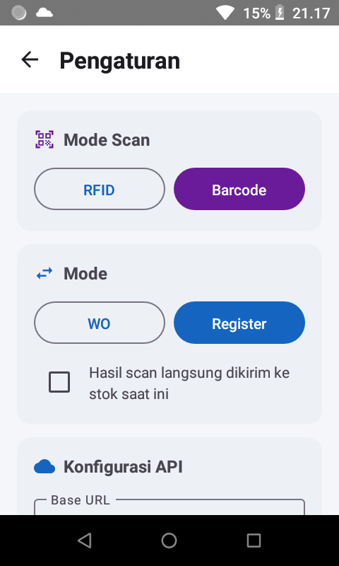
Saat Mode Barcode aktif, tampilan Layar Scan berubah warna menjadi aksen ungu agar operator langsung tahu mode mana yang sedang berjalan tanpa perlu membaca teks.
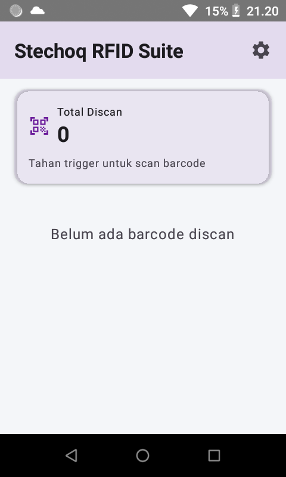 Menunggu scan pertama |
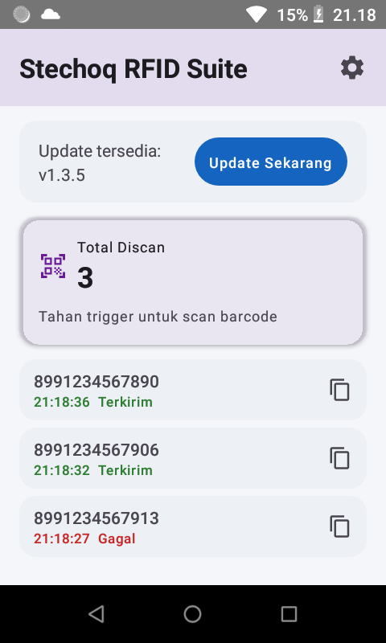 Hasil scan dengan status kirim |
Setiap baris hasil pada Mode Barcode menampilkan kode yang terbaca, waktu scan, dan status pengiriman: Mengirim…, Terkirim (hijau), atau Gagal (merah).
Terlepas dari Mode Scan (RFID/Barcode) di atas, ada satu pengaturan lagi yang menentukan ke alur bisnis mana hasil scan dikirim: WO atau Register. Diatur dari Pengaturan → Mode.
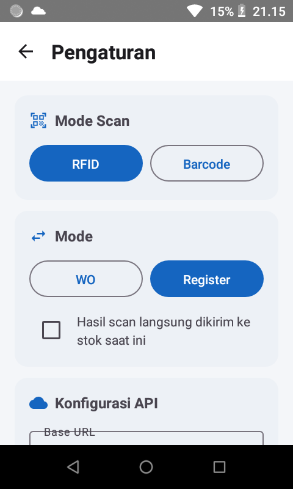
Kedua mode mengirim data dengan format yang sama persis ke server yang sama — server membedakannya lewat satu penanda di data yang dikirim, sehingga operator tidak perlu memikirkan perbedaan teknisnya.
Fitur ini mati secara default. Jika diaktifkan lewat Pengaturan → Scan Latar Belakang, dua hal berubah:
Warna bulatan menunjukkan status tanpa perlu membaca teks:
| Warna | Artinya |
|---|---|
| Abu-abu | Diam — tidak sedang scan |
| Biru | Sedang scan — menampilkan jumlah tag unik yang sudah terbaca |
| Hijau | Scan terakhir berhasil terkirim — menampilkan jumlah tag yang terkirim |
| Merah | Scan terakhir gagal terkirim |
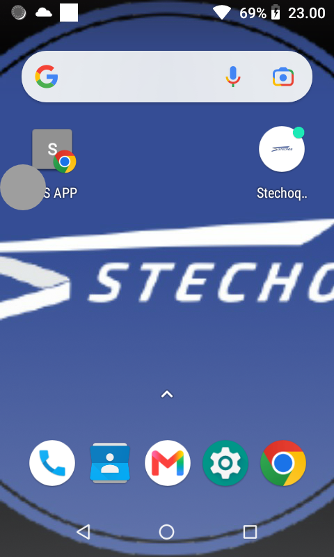 Diam, di atas layar utama HP |
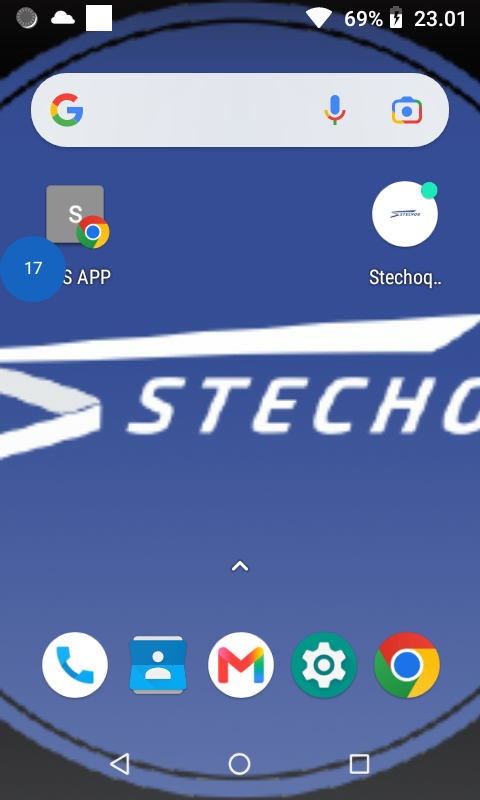 Sedang scan, jumlah tag berjalan |
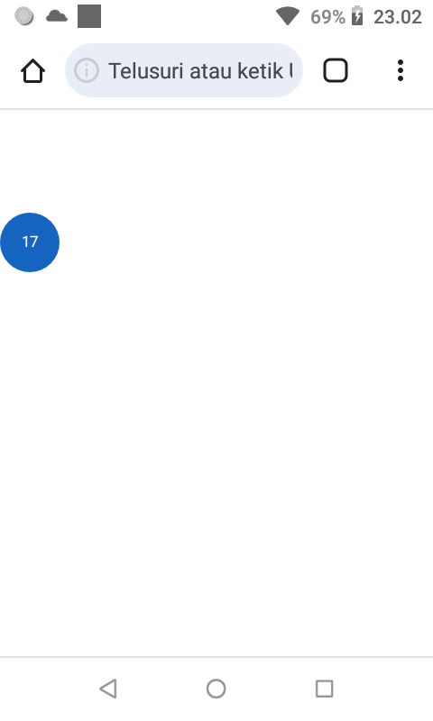 Mengambang di atas Chrome |
Fitur ini menyala secara default, diatur lewat Pengaturan → Backup Lokal. Setiap kali sesi scan RFID berhenti — berhasil terkirim maupun tidak — seluruh daftar tag pada sesi tersebut otomatis disimpan ke file CSV di penyimpanan perangkat. Fitur ini adalah jaring pengaman apabila koneksi WiFi gudang sedang tidak stabil.
File tersimpan otomatis di folder:
Android/data/com.example.chainwayrfidbridge/files/rfid_stc/
satu file per sesi scan, dengan nama scan_YYYYMMDD_HHMMSS.csv, berisi kolom:
epc, first_seen, last_seen, read_count, antenna, rssi, is_new.
Aplikasi secara otomatis memeriksa versi terbaru setiap kali dibuka, dan setiap kembali ke layar depan (paling cepat setiap 5 menit sekali). Jika tersedia versi baru, muncul kartu notifikasi di Layar Scan:
Tidak perlu laptop, kabel data, atau transfer APK manual — semua dilakukan langsung dari handheld lewat internet.
Bab ini menjelaskan setiap bagian di menu Pengaturan, dari atas ke bawah. Bagian ini biasanya hanya perlu disentuh sekali oleh admin/IT saat konfigurasi awal sebuah handheld.
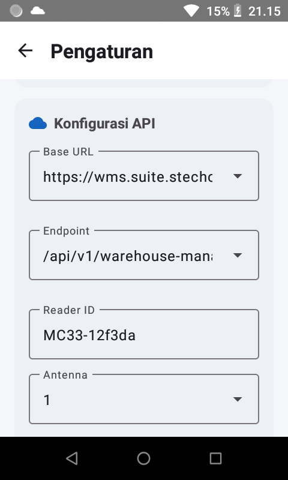
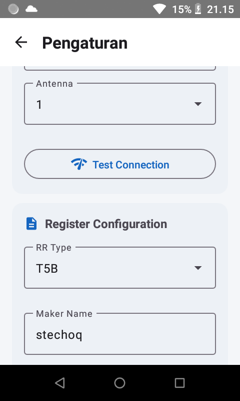
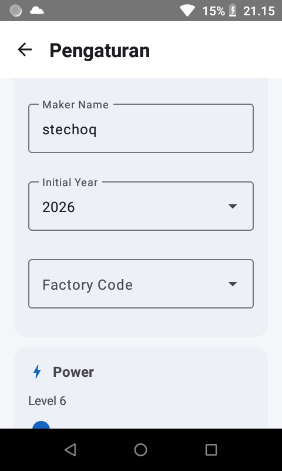
Mengatur kekuatan pancar RF reader. Rentang nilai mengikuti perangkat aslinya: Chainway 1–30 dBm, Zebra 0–300 (sama seperti aplikasi resmi 123RFID milik Zebra). Bagian ini otomatis disembunyikan saat Mode Barcode aktif.
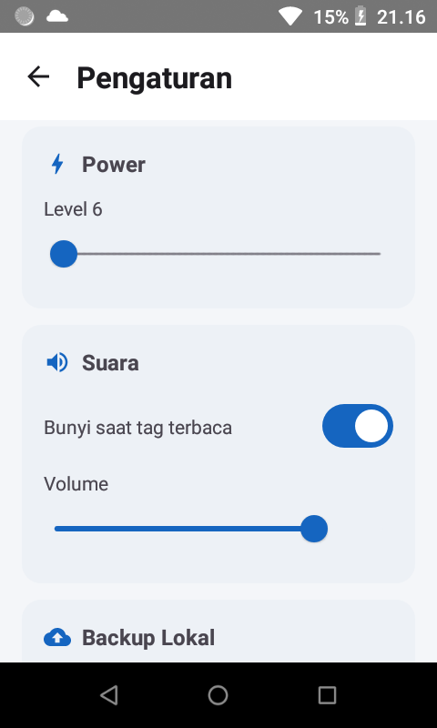
Bunyi setiap kali tag/barcode berhasil terbaca, bisa dimatikan, lengkap dengan pengatur volume.
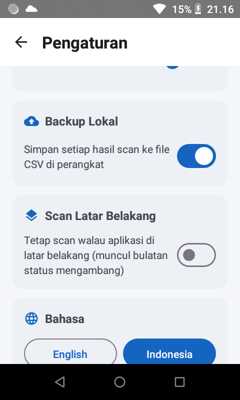
Lihat Bab 7, Bab 8, dan Bab 11 untuk penjelasan masing-masing.
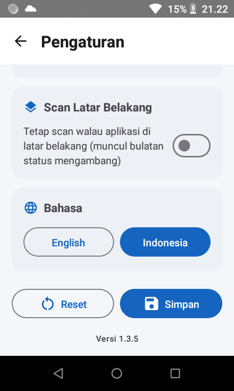
Tersedia dalam Bahasa Indonesia dan Inggris, bisa diganti kapan saja lewat menu Pengaturan, dan berlaku instan ke seluruh layar — termasuk notifikasi dan pesan validasi. Secara bawaan, aplikasi terpasang dalam Bahasa Inggris hingga diganti manual.
| Gejala | Penjelasan & solusi |
|---|---|
| Muncul pesan error terkait charging saat scan RFID (khusus Zebra) | Sebagian unit Zebra menolak memulai scan RFID saat merasa sedang di-charge, termasuk saat tersambung ke dock USB/adb. Ini bukan bug — lepas dari charger lalu coba lagi. |
| Laser barcode ikut menyala saat scan RFID (khusus Zebra) | Mesin barcode DataWedge milik Zebra kadang mengambil alih tombol trigger saat aplikasi lain yang punya profil DataWedge sendiri (mis. browser) tampil di depan. Aplikasi ini otomatis menonaktifkan DataWedge setiap kali Mode RFID aktif. Jika terus berulang di satu unit tertentu, laporkan ke tim IT sebagai kemungkinan masalah profil DataWedge di unit tersebut. |
| Trigger memicu pemindai barcode (lampu menyala, berhasil membaca) tapi hasilnya tidak pernah muncul di aplikasi (Mode Barcode, khusus Zebra) | Ini adalah masalah konfigurasi profil DataWedge di sistem — hasil scan terkirim ke profil lain, bukan ke aplikasi ini. Laporkan ke tim IT; solusinya bersifat teknis di sisi sistem, bukan sesuatu yang bisa diperbaiki operator sendiri di lapangan. |
| Update tidak mau terpasang | Bisa terjadi jika perangkat pernah dipasangi APK versi uji coba/manual oleh tim IT. Hubungi tim IT untuk memasang ulang aplikasi ke versi resmi. |
| Unduhan update terhenti/timeout | Aplikasi mengunduh file update (beberapa MB) lewat jaringan handheld; pada WiFi gudang yang lambat, percobaan pertama kadang gagal. Tekan Update Sekarang sekali lagi untuk mencoba ulang. |